정보처리기사(구) (2007-09-02 기출문제)
1과목: 데이터 베이스
1. 관계형 데이터 모델의 참조무결성 제약에 관한 설명 중 옳지 않은 것은?
- 외래 키의 속성들은 참조하려는 테이블의 기본 키와 도메인이 동일해야 한다.
- 외래 키의 속성명과 참조하려는 테이블의 기본 키의 속성명은 동일해야 한다.
- 외래 키의 속성 개수와 참조하려는 테이블의 기본 키의 속성 개수는 같아야 한다.
- 외래 키 값은 참조하려는 테이블의 기본 키 값으로 존재해야 한다.
(정답률: 43%)

2. 2단계 로킹(Two Phase Locking)에 대한 설명으로 옳지 않은 것은?
- 직렬성을 보장한다.
- 확장 단계와 축소 단계의 두 단계(Phase)가 있다.
- 교착 상태를 예방할 수 있다.
- 각 트랜잭션의 로크 요청과 해제 요청을 2단계로 실시한다.
(정답률: 43%)
3. 스키마(Schema)에 대한 설명으로 거리가 먼 것은?
- 데이터베이스를 운용하는 소프트웨어이다.
- 데이터 사전(Data Dictionary)에 저장된다.
- 다른 이름으로 메타 데이터(Meta-Data)라고도 한다.
- 데이터베이스의 구조(개체, 속성, 관계)에 대한 정의이다.
(정답률: 70%)
4. 릴레이션의 특성으로 적합하지 않은 것은?
- 중복된 튜플이 존재하지 않는다.
- 튜플 간의 순서는 없다.
- 속성 간의 순서는 있다.
- 모든 속성값은 원자값을 갖는다.
(정답률: 82%)
5. 시스템 카탈로그에 대한 설명으로 옳지 않은 것은?
- 사용자가 시스템 카탈로그를 직접 갱신할 수 있다.
- 일반 질의어를 이용해 그 내용을 검색할 수 있다.
- DBMS가 스스로 생성하고, 유지하는 데이터베이스 내의 특별한 테이블의 집합체이다.
- 데이터베이스 스키마에 대한 정보를 제공한다.
(정답률: 85%)
6. 트랜잭션이 가져야 되는 특성과 거리가 먼 것은?
- 원자성(Atomicity)
- 일관성(Consistency)
- 독립성(Independency)
- 영속성(Durability)
(정답률: 67%)
7. Which of following is not a component of Entity-Relationship diagram?
- Rectangles, which represent entity sets
- Ellipses, which represent database operations
- Diamond, which represent relationships among entity sets
- Lines, which link attributes to entity sets and entity sets to relationships
(정답률: 64%)
8. 운영체제의 작업 스케줄링 등에 응용될 수 있는 가장 적합한 자료 구조는?
- 스택(Stack)
- 큐(Queue)
- 트리(Tree)
- 연결 리스트(Linked List)
(정답률: 63%)
9. 연결 리스트(Linked List)에 대한 설명으로 거리가 먼 것은?
- 노드의 삽입이나 삭제가 쉽다.
- 노드들이 포인터로 연결되어 검색이 빠르다.
- 연결을 해주는 포인터(Pointer)를 위한 추가 공간이 필요하다.
- 연결 리스트 중에서 중간 노드 연결이 끊어지면 그 다음 노드를 찾기 힘들다.
(정답률: 37%)
10. SQL에서 DELETE 명령에 대한 설명으로 옳지 않은 것은?
- 테이블의 행을 삭제할 때 사용한다.
- 특정 테이블에 대하여 WHERE 조건절이 없는 DELETE 명령을 수행하면 DROP TABLE 명령을 수행했을 때와 같은 효과를 얻을 수 있다.
- SQL을 사용 용도에 따라 분류할 경우 DML에 해당한다.
- 기본 사용 형식은 “DELETE FROM 테이블 [WHERE 조건];”이다.
(정답률: 78%)
11. 분산 데이터베이스 설계 시 고려 사항으로 옳지 않은 것은?
- 작업 부하(Work Load)의 노드별 분산 정책
- 지역의 자치성 보장 정책
- 데이터의 일관성 정책
- 분산 노드 간 데이터의 중복성 보장과 가용성 감소 정책
(정답률: 77%)
12. 데이터베이스 설계 순서로 옳은 것은?
- 요구조건 분석→개념적 설계→논리적 설계→물리적 설계→구현
- 요구조건 분석→논리적 설계→개념적 설계→물리적 설계→구현
- 요구조건 분석→논리적 설계→물리적 설계→개념적 설계→구현
- 요구조건 분석→개념적 설계→물리적 설계→논리적 설계→구현
(정답률: 87%)
13. 데이터베이스의 물리적 설계 옵션 선택 시 고려 사항으로 거리가 먼 것은?
- 스키마의 평가
- 응답 시간
- 저장 공간의 효율화
- 트랜잭션 처리도(Throughput)
(정답률: 73%)
14. 다음의 빈칸에 적합한 단어는 무엇인가?
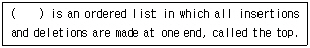
- Queue
- Dequeue
- Stack
- Linked list
(정답률: 77%)
15. 양방향에서 입출력이 가능한 선형 자료구조로서 2개의 포인터를 이용하여 양쪽 끝 모두에서 삽입·삭제가 가능한 것은?
- 데크(Deque)
- 스택(Stack)
- 큐(Queue)
- 트리(Tree)
(정답률: 69%)
16. 데이터베이스의 특성으로 옳지 않은 것은?
- 실시간 접근성
- 지속적인 변화
- 동시 공유
- 주소에 의한 참조
(정답률: 84%)
17. 다음의 Infix로 표현된 수식을 Postfix 표기로 옳게 변환한 것은?
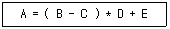
- =A*-BC+DE
- =A+*-BCDE
- ABC-D*E+=
- ABC*D-E+=
(정답률: 68%)
18. 데이터 모델의 구성 요소로 거리가 먼 것은?
- Mapping
- Structure
- Operation
- Constraint
(정답률: 72%)
19. SQL의 명령은 사용 용도에 따라 DDL, DML, DCL로 구분할 수 있다. 다음 명령 중 그 성격이 나머지 셋과 다른 것은?
- SELECT
- UPDATE
- INSERT
- GRANT
(정답률: 81%)
20. 데이터베이스의 3층 스키마 중 모든 응용시스템과 사용자들이 필요로 하는 데이터를 통합한 조직 전체의 데이터베이스 구조를 논리적으로 정의하는 스키마는?
- 개념스키마
- 외부스키마
- 내부스키마
- 응용스키마
(정답률: 70%)
2과목: 전자 계산기 구조
21. 2진수 (1011)2을 Gray Code로 변환하면?
- 1001
- 1100
- 1111
- 1110
(정답률: 61%)
22. 다음 연산의 결과는(단, 수의 표현은 2’s Complement 임)?
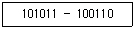
- 000110
- 000101
- 100110
- 100101
(정답률: 59%)
23. 16-Bit 컴퓨터 시스템에서 다음과 같은 2가지의 명령어 형식을 사용할 때 최대 연산자의 수는?
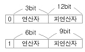
- 64
- 72
- 86
- 144
(정답률: 56%)
24. 다음 그림에서 F를 A, B의 불식으로 나타내면?(단, 그림에서 X는 선의 절단을 표시함)
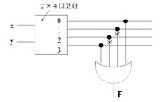
- F = A+B
- F = AB'+A'B
- F = AB
- F=AB+A'B'
(정답률: 38%)
25. 마이크로명령 형식으로 적합하지 않은 것은?
- 수평마이크로명령
- 제어마이크로명령
- 수직마이크로명령
- 나노명령
(정답률: 48%)
26. 매크로(Macro)의 인수(因數) 사용에 해당되지 않는 것은?
- 인수의 형(Type)
- 인수의 위치
- 인수를 지정
- 인수의 수를 변동
(정답률: 33%)
27. 프로그램 실행 중에 트랩(Trap)이 발생하는 조건이 아닌 것은?
- Overflow 또는 Underflow 시
- 0(Zero)에 의한 나눗셈
- 불법적인 명령
- 패리티 오류
(정답률: 56%)
28. 중앙연산처리장치의 하드웨어적인 요소가 아닌 것은?
- IR(Instruction Register)
- MAR(Memory Address Register)
- MODEM(MOdulator DEModulator)
- PC(Program Counter)
(정답률: 64%)
29. 연관기억장치(Associative Memory)에 대한 설명과 가장 관계가 없는 것은?
- 저장 공간의 확대가 목적이다.
- 신속한 검색이 가능하다.
- 주소를 필요로 하지 않는다.
- 하드웨어의 비용이 크다
(정답률: 48%)
30. 다음 회로는 무엇인가?
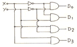
- Decoder
- Multiplexer
- Encoder
- Shifter
(정답률: 69%)
31. 16진수 A4D를 8진수로 바꾸면?
- 5115(8)
- 5116(8)
- 5117(8)
- 5118(8)
(정답률: 60%)
32. 누산기(Accumulator)에 대한 설명 중 옳은 것은?
- 연산장치에 있는 레지스터의 하나로서 연산 결과를 기억하는 장치이다.
- 기억장치 주변에 있는 회로인데 가감승제 계산 및 논리 연산을 행하는 장치이다.
- 일정한 입력 숫자들을 더하여 그 누계를 항상 보관하는 장치이다.
- 정밀 계산을 위해 특별히 만들어 두어 유효 숫자의 개수를 늘리기 위한 것이다.
(정답률: 68%)
33. 프로그램 수행 도중 서로 다른 번지의 주소를 동시에 지정하는 방식은?
- 파이프라인 방식
- 인터리빙 방식
- 인코딩 방식
- 메모리 캐시 방식
(정답률: 58%)
34. 컴퓨터가 인터럽트 루틴 수행 후에 처리하는 것은?
- 전원을 다시 동작한다.
- 모니터 화면에 인터럽트 종류를 디스플레이 한다.
- 메모리의 내용을 지워서 다른 프로그램이 적재될 수 있도록 한다.
- 인터럽트 처리 시 보존시켰던 PC 및 제어상태 데이터를 PC와 제어상태 레지스터에 복구한다.
(정답률: 82%)
35. 가상기억장치에 대한 설명 중 틀린 것은?
- 주소공간이란 가상공간의 집합을 말한다.
- 실제 컴퓨터의 기억장치 내 주소를 물리주소라고 한다.
- 가상주소를 물리주소로 변환하는 방법의 하나로 CAM을 사용한다.
- 빈번히 참조되는 프로그램이나 데이터를 별도의 메모리에 저장하여 처리한다.
(정답률: 38%)
36. Stack구조의 컴퓨터에서 사용하는 연산명령어의 주소지정방식은?
- 0-Address
- 1-Address
- 2-Address
- 3-Address
(정답률: 71%)
37. 명령어 수행시간이 10ns이고, 명령어 패치 시간이 5ns, 명령어 준비시간이 3ns이라면 인스트럭션의 성능은 얼마인가?
- 0.1
- 0.3
- 0.5
- 1.25
(정답률: 61%)
38. 하드웨어 신호에 의하여 특정 번지의 서브루틴을 수행하는 것은?
- Handshaking Mode
- Vectored Interrupt
- DMA
- Subroutine Call
(정답률: 60%)
39. 우선순위 인터럽트 운영 방식이 아닌 것은?
- LCFS(Last Come First Service)
- FCFS(First Come First Service)
- Masking Scheme
- Fixed Service
(정답률: 59%)
40. 소프트웨어에 의한 우선순위 체제의 특성을 설명한 것으로 옳지 않은 것은?
- 경제적이다.
- 융통성이 있다.
- 반응속도가 느리다.
- 정보량이 매우 적은 시스템에 적합하다.
(정답률: 52%)
3과목: 운영체제
41. UNIX의 파일 시스템 구조와 거리가 먼 것은?
- 부트 블록
- 사용자 블록
- I-node 블록
- 슈퍼 블록
(정답률: 62%)
42. 두 개의 프로세스 간 선행 순서를 Pi<Pj로 표현할 경우 Pj가 먼저 실행된다고 가정한다면 P2<P1, P4<P2, P4<P3의 선행관계가 있는 경우에 병행으로 실행될 수 있는 프로세스로 짝지어진 것은?
- P1, P3
- P1, P4
- P2, P4
- P3, P4
(정답률: 59%)
43. 주기억장치 배치전략기법으로 최초적합(First Fit) 방법을 사용한다고 할 때 다음과 같은 기억장소 리스트에서 10K 크기의 작업은 어느 기억공간에 할당되는가?(단, 탐색은 위에서 아래로 한다.)
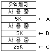
- A
- B
- C
- 할당할 수 없다.
(정답률: 78%)
44. 3개의 페이지 프레임(Frame)을 가진 기억장치에서 페이지 요청을 다음과 같은 페이지 번호 순으로 요청했을 때 교체 알고리즘으로 FIFO 방법을 사용한다면 몇 번의 페이지 부재(Fault)가 발생하는가?(단, 현재 기억장치는 모두 비어 있다고 가정한다.)
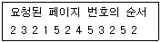
- 7번
- 8번
- 9번
- 10번
(정답률: 50%)
45. 일반적으로 사용되는 자원보호기법의 종류에 해당하지 않는 것은?
- 접근 제어 행렬(Access Control Matrix)
- 접근 제어 리스트(Access Control List)
- 권한 행렬(Capability Matrix)
- 권한 리스트(Capability List)
(정답률: 63%)
46. 운영체제를 기능상 분류했을 때, 제어 프로그램 중 다음 설명에 해당하는 것은?
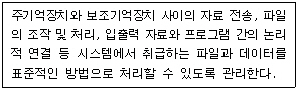
- 문제 프로그램(Problem Program)
- 감시 프로그램(Supervisor Program)
- 작업 제어 프로그램(Job Control Program)
- 데이터 관리 프로그램(Data Management Program)
(정답률: 64%)
47. UNIX에서 I-node는 한 파일이나 디렉터리에 관한 모든 정보를 포함하고 있는데, 이에 해당하지 않는 것은?
- 파일이 가장 처음 변경된 시간 및 파일의 타입
- 파일 소유자의 사용자 번호
- 파일이 만들어진 시간
- 데이터가 담긴 블록의 주소
(정답률: 72%)
48. 교착상태 예방기법 중 사용하기에 적절하지 않은 것은?
- 상호배제 조건의 부정
- 점유 및 대기 조건의 부정
- 비선점 조건의 부정
- 환형 대기 조건의 부정
(정답률: 45%)
49. 디스크 대기 큐에 다음과 같은 순서의 액세스 요청이 대기 중이다. 현재 헤드가 70트랙을 처리하고 60트랙으로 이동하였다면, SCAN 방식을 사용할 경우 다음 디스크 대기 큐에서 먼저 처리되는 트랙은?
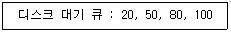
- 20
- 50
- 80
- 100
(정답률: 70%)
50. 스케줄링 기법 중 SJF 기법과 SRT 기법에 관한 설명으로 옳지 않은 것은?
- SJF는 비선점(Nonpreemptive) 기법이다.
- SJF는 작업이 끝나기 까지의 실행시간 추정치가 가장 작은 작업을 먼저 실행시킨다.
- SRT는 실행 시간을 추적해야 하므로 오버헤드가 증가한다.
- SRT에서는 이미 할당된 CPU를 다른 프로세스가 강제로 빼앗아 사용할 수 없다.
(정답률: 61%)
51. 스래싱(Thrashing)에 관한 설명으로 가장 거리가 먼 것은?
- 스래싱이 발생하면 CPU가 제 기능을 발휘하지 못한다.
- 프로세스가 프로그램 수행에 소요되는 시간보다 페이지 교환에 소요되는 시간이 더 큰 경우를 의미한다.
- 스래싱을 방지하기 위해서는 멀티프로그래밍의 정도(Degree)를 높여야 한다.
- 프로세스들이 워킹 셋을 확보하지 못한 결과이다.
(정답률: 68%)
52. 분산 시스템의 위상에 따른 분류 방식 중 다음 설명은 어떤 방식에 관한 것인가?
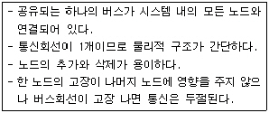
- Ring Connected
- Multi Access Bus Connected
- Partially Connected
- Fully Connected
(정답률: 72%)
53. 다음의 운영체제 형태 중 시대적으로 가장 먼저 생겨난 방식은?
- 다중프로그래밍 시스템
- 시분할시스템
- 일괄처리시스템
- 분산처리시스템
(정답률: 82%)
54. 가상기억장치 구현에서 세그먼테이션(Segmentation) 기법의 설명으로 옳지 않은 것은?
- 페이지 맵 테이블(Page Map Table)이 필요하다.
- 세그먼테이션은 프로그램을 여러 개의 블록으로 나누어 수행한다.
- 각 세그먼트는 고유한 이름과 크기를 갖는다.
- 기억장치 보호키가 필요하다.
(정답률: 58%)
55. 다중 처리기 운영체제 구조 중 주/종(Master/Slave) 처리기 시스템에 대한 설명으로 옳지 않은 것은?
- 주프로세서는 입·출력과 연산 작업을 수행한다.
- 종프로세서는 운영체제를 수행한다.
- 종프로세서는 입·출력 발생 시 주프로세서에게 서비스를 요청한다.
- 한 처리기는 주프로세서로 지정하고 다른 처리기들은 종프로세서로 지정하는 구조이다.
(정답률: 71%)
56. 스레드에 대한 설명으로 거리가 먼 것은?
- 하나의 스레드는 상태를 줄인 경량 프로세스라고도 한다.
- 프로세스 내부에 포함되는 스레드는 공통적으로 접근 가능한 기억장치를 통해 효율적으로 통신한다.
- 스레드를 사용하면 하드웨어, 운영체제의 성능과 응용 프로그램의 처리율을 향상시킬 수 있다.
- 하나의 프로세스에 여러 개의 스레드가 존재할 수 없다.
(정답률: 80%)
57. 운영체제의 성능 평가 기준으로 거리가 먼 것은?
- Throughput
- Reliability
- Integrity
- Turn Around Time
(정답률: 50%)
58. UNIX 명령어의 기능 설명이 옳지 않은 것은?
- fork - 새로운 프로세스를 생성한다.
- getpid - 자신의 프로세스 id를 얻는다.
- getppid - 자식 프로세스의 id를 얻는다.
- exit - 프로세스 수행을 종료한다.
(정답률: 63%)
59. 버퍼링(Buffering)과 스풀링(Spooling)에 관한 설명으로 옳지 않은 것은?
- 버퍼란 입출력이 일어나는 동안 그 데이터를 저장하는 주기억장치의 일부분이다.
- 버퍼(Buffering) 사용으로 계산(Computation)과 입출력의 병렬 처리가 가능하다.
- 스풀링은 CPU의 처리 속도에 비해 입·출력장치의 처리 속도가 훨씬 느리기 때문에 전체적인 처리 속도의 차이를 줄여주기 위하여 고안되었다.
- 버퍼링은 스풀링보다 많은 입출력 작업을 중첩시킬 수 있다.
(정답률: 48%)
60. 사이클이 허용되고, 불필요한 파일 제거를 위해 참조 카운터가 필요한 디렉터리 구조는?
- 1단계 디렉터리 구조
- 2단계 디렉터리 구조
- 트리 디렉터리 구조
- 일반 그래프 디렉터리 구조
(정답률: 54%)
4과목: 소프트웨어 공학
61. S/W Project 일정이 지연된다고 해서 Project 말기에 새로운 인원을 추가 투입하면 Project는 더욱 지연되게 된다는 내용과 관련되는 법칙은?
- Putnam 법칙
- Mayer 법칙
- Brooks 법칙
- Boehm 법칙
(정답률: 78%)
62. 프로토타입 모형의 장점으로 가장 적절한 것은?
- 프로젝트 관리가 용이하다.
- 노력과 비용이 절감된다.
- 요구사항을 충실히 반영한다.
- 관리와 개발이 명백히 구분된다.
(정답률: 73%)
63. 소프트웨어 품질 목표에 대한 설명으로 옳지 않은 것은?
- 신뢰성(Reliability) : 정확하고 일관된 결과를 얻기 위해 요구된 기능을 수행하는 정도
- 이식성(Protability) : 다양한 하드웨어 환경에서도 운용 가능하도록 쉽게 수정될 수 있는 정도
- 상호 운용성(Interoperability) : 다른 소프트웨어와 정보를 교환할 수 있는 정도
- 사용 용이성(Usability) : 전체나 일부 소프트웨어가 다른 응용 목적으로 사용될 수 있는 정도
(정답률: 62%)
64. 프로젝트 계획 수립 시 소프트웨어 범위(Scope) 결정의 주요 요소로 거리가 먼 것은?
- 소프트웨어 개발환경
- 소프트웨어 성능
- 소프트웨어 제약조건
- 소프트웨어 신뢰도
(정답률: 57%)
65. 소프트웨어 품질 보증을 위한 정형 기술 검토의 지침사항으로 옳지 않은 것은?
- 논쟁과 반박의 제한성
- 의제의 무제한성
- 제품 검토의 집중성
- 참가인원의 제한성
(정답률: 68%)
66. 자료 흐름도의 구성 요소가 아닌 것은?
- Process
- Data Store
- Data Dictionary
- Terminator
(정답률: 64%)
67. 객체지향 시스템에서 전통적 시스템의 함수(Function) 또는 프로시저(Procedure)에 해당하는 연산기능을 무엇이라고 하는가?
- 메소드(Method)
- 메시지(Message)
- 모듈(Module)
- 패키지(Package)
(정답률: 76%)
68. 소프트웨어 개발의 생산성에 영향을 미치는 요소로 거리가 먼 것은?
- 프로그래머의 능력
- 팀 의사 전달
- 제품의 복잡도
- 소프트웨어 사용자의 능력
(정답률: 73%)
69. 자료 사전에서 반복을 의미하는 기호는?
- ( )
- { }
- [ ]
- +
(정답률: 77%)
70. 럼바우의 객체지향분석모델링(Modeling)에 해당하지 않는 것은?
- Relational Modeling
- Object Modeling
- Functinal Modeling
- Dynamic Modeling
(정답률: 61%)
71. 소프트웨어 재사용에 대한 설명으로 옳지 않은 것은?
- 개발 시간과 비용을 감소시킨다.
- 프로젝트 실패의 위험을 줄여 준다.
- 재사용 부품의 크기가 작을수록 재사용률이 낮다.
- 소프트웨어 개발자의 생산성을 증가시킨다.
(정답률: 79%)
72. 소프트웨어 생명주기 모형 중 Boehm이 제시한 고전적 생명주기 모형으로서 선형 순차적 모델이라고도 하며, 타당성 검토, 계획, 요구사항 분석, 설계, 구현, 테스트, 유지보수의 단계를 통해 소프트웨어를 개발하는 모형은?
- 폭포수 모형
- 프로토타입 모형
- 나선형 모형
- RAD 모형
(정답률: 73%)
73. 공학적으로 좋은 소프트웨어에 대한 설명으로 적합하지 않은 것은?
- 사용법, 구조의 설명, 성능, 기능이 이해하기 쉬어야 한다.
- 유지보수가 용이해야 한다.
- 실행속도가 빠르고 소요 기억용량을 많이 차지할수록 좋다.
- 사용자 수준에 따른 적당한 사용자 인터페이스를 제공해야 한다.
(정답률: 82%)
74. 객체지향 기법의 캡슐화(Encapsulation)에 대한 설명으로 거리가 먼 것은?
- 변경 발생 시 오류의 파급효과가 적다.
- 인터페이스가 단순화 된다.
- 소프트웨어 재사용성이 높아진다.
- 상위 클래스의 모든 속성과 연산을 하위 클래스가 물려받는 것을 의미한다.
(정답률: 70%)
75. CASE에 대한 설명으로 거리가 먼 것은?
- 자동화된 기법을 통해 소프트웨어 품질이 향상된다.
- 소프트웨어 부품의 재사용성이 향상된다.
- 프로토타입 모델에 위험 분석 기능을 추가한 생명주기 모형이다.
- 소프트웨어 도구와 방법론의 결합이다.
(정답률: 64%)
76. 화이트박스검사로 찾기 힘든 오류는?
- 논리 흐름도
- 루프 구조
- 자료 구조
- 순환 복잡도
(정답률: 43%)
77. 소프트웨어 유지보수 유형 중 현재 수행 중인 기능의 수정, 새로운 기능의 추가, 전반적인 기능 개선 등의 요구를 사용자로부터 받았을 때 수행되는 유형으로서, 유지보수 유형 중 제일 많은 비용이 소요되는 것은?
- Preventive Maintenance
- Adaptive Maintenance
- Corrective Maintenance
- Perfective Maintenance
(정답률: 59%)
78. 소프트웨어 프로젝트 관리의 효과적 수행을 위한 3P에 해당하지 않는 것은?
- Program
- People
- Problem
- Process
(정답률: 75%)
79. 블랙박스검사에 대한 설명으로 옳지 않은 것은?
- 각 기능이 완전히 작동되는 것을 입증하는 검사이다.
- 인터페이스 결함, 성능 결함, 초기화와 종료 이상 결함 등을 찾아낸다.
- 동치 분할 검사는 논리적인 조건과 대응하는 행동을 간략히 표현할 수 있도록 하는 검사 사례 설계 기법이다.
- 경계 값 분석은 입력의 경계 값에서 발생하는 오류를 제거하기 위한 검사 기법이다.
(정답률: 53%)
80. 다음 중 공학적으로 잘 작성된 소프트웨어가 갖는 특성으로 옳은 것은?
- 원하는 요구사항 중에 중요한 사항만 반영한다.
- 유지보수 비용이 많이 들어간다.
- 신뢰성이 떨어지더라도 효율성이 높다.
- 사용자가 손쉽게 사용할 수 있다.
(정답률: 78%)
5과목: 데이터 통신
81. 다음 중 전용 전송로를 사용하는 방식은?
- 회선 교환 방식
- 메시지 교환 방식
- 데이터그램 방식
- 가상 회선 방식
(정답률: 70%)
82. 문자의 시작과 끝에 START 비트와 STOP 비트가 부가되어 전송의 시작과 끝을 알려 전송하는 방식은?
- 비동기식 전송
- 동기식 전송
- 전송 동기
- PCM 전송
(정답률: 53%)
83. 다음 LAN의 네트워크 토폴로지(Topology)는 어떤 형인가?
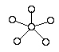
- 링형
- 성형
- 버스형
- 트리형
(정답률: 82%)
84. OSI 7계층 구조로 최하위 계층부터 최상위 계층의 순서가 옳은 것은?
- Physical Layer→Network Layer→Transport Layer→Data Link Layer→Session Layer→Presentation Layer→Application Layer
- Physical Layer→Network Layer→Data Link Layer→Transport Layer→Session Layer→Presentation Layer→Application Layer
- Physical Layer→Data Link Layer→Network Layer→Transport Layer→Session Layer→Presentation Layer→Application Layer
- Physical Layer→Data Link Layer→Network Layer→Transport Layer→Presentation Layer→Session Layer→Application Layer
(정답률: 66%)
85. HDLC(High-Level Data Link Control)에 관련된 설명이 아닌 것은?
- 비트 지향형 전송을 한다.
- CRC 방식을 이용하여 오류 제어를 한다.
- 정지 및 대기 방식을 사용한다.
- 정보 프레임과 감독 프레임 등이 있다.
(정답률: 47%)
86. 인터넷 상에서 도메인 주소를 IP 주소로 변환하여 주는 서버를 무엇이라고 하는가?
- 웹 서버
- DNS 서버
- 파일 서버
- 팝 서버
(정답률: 82%)
87. 다음에서 데이터링크의 전송제어 절차의 순서가 올바른 것은?
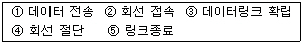
- ⑤-④-②-③-①
- ②-③-①-⑤-④
- ②-③-⑤-①-④
- ②-③-①-④-⑤
(정답률: 72%)
88. TCP 헤더에 포함되는 정보가 아닌 것은?
- 긴급 포인터
- 호스트 주소
- 순서 번호
- 체크섬
(정답률: 46%)
89. 다음 중 자유 경쟁으로 채널 사용권을 확보하는 방법으로, 노든 간의 충돌을 허용하는 네트워크 접근 방법은?
- Slotted Ring
- Token Passing
- CSMA/CD
- Polling
(정답률: 62%)
90. HDLC에서 피기백킹(Piggybacking) 기법을 통해 데이터에 대한 확인 응답을 보낼 때 사용되는 프레임은?
- I-프레임
- S-프레임
- U-프레임
- A-프레임식
(정답률: 44%)
91. 다음 중 IP의 라우팅 프로토콜이 아닌 것은?
- IGP
- RIP
- EGP
- HDLC
(정답률: 67%)
92. 전송 시간을 일정한 간격의 시간 슬롯(Time Slot)으로 나누고, 이를 주기적으로 각 채널에 할당하는 다중화 방식은?
- 주파수 분할 다중화
- 동기식 시분할 다중화
- 코드 분할 다중화
- 공간 분할 다중화
(정답률: 76%)
93. 전송 오류 제어 중 오류가 발생한 프레임뿐만 아니라 오류 검출 이후의 모든 프레임을 재전송하는 ARQ 방식은?
- Go-back-N ARQ
- Stop-and-Wait ARQ
- Selective Repeat ARQ
- Non-Selective Repeat ARQ
(정답률: 69%)
94. PCM(Pulse Code Modulation) 과정에 포함되지 않는 것은?
- 다중화
- 샘플링
- 양자화
- 부호화
(정답률: 57%)
95. 주파수 분할 다중화에서 인접한 채널 간의 간섭을 방지하기 위한 대역은?
- Buffer
- Slot
- Channel
- Guard Band
(정답률: 73%)
96. 호스트의 물리 주소를 통해 논리 주소인 IP 주소를 얻어오기 위해 사용되는 프로토콜은?
- ICMP
- IGMP
- ARP
- RARP
(정답률: 48%)
97. 다음 중 멀티 포인터(Multi-Point) 방식에서 보조국(Secondary Station)이 주국(Primary Station)에게 보낼 데이터를 갖고 있는지 주국에서 확인하는 방식은?
- 폴링(Polling)
- 셀렉션(Selection)
- 요청(Request)
- 응답(Response)
(정답률: 59%)
98. 다음 중 패킷 교환망의 설명으로 틀린 것은?
- 가상 회선 방식과 데이터그램 방식이 있다.
- 전송에 실패한 패킷의 경우 재전송이 가능하다.
- 패킷 단위로 헤더를 추가하므로 패킷별 오버헤드가 발생한다.
- 실시간 전송이나, 다량의 데이터 전송에 적합하다.
(정답률: 48%)
99. 어느 회선의 속도가 400[Baud]이고, 각 신호가 4비트의 정보를 나타낸다면 데이터 전송률은 몇 Bps인가?
- 400
- 800
- 1,600
- 3,200
(정답률: 71%)
100. 다음 중 아날로그 데이터를 디지털 신호로 변환하는 것은?
- PCM(Pulse Code Modulation)
- AM(Amplitude Modulation)
- PSK(Phase Shift Keying)
- FDM(Frequency Division Multiplexing)
(정답률: 61%)